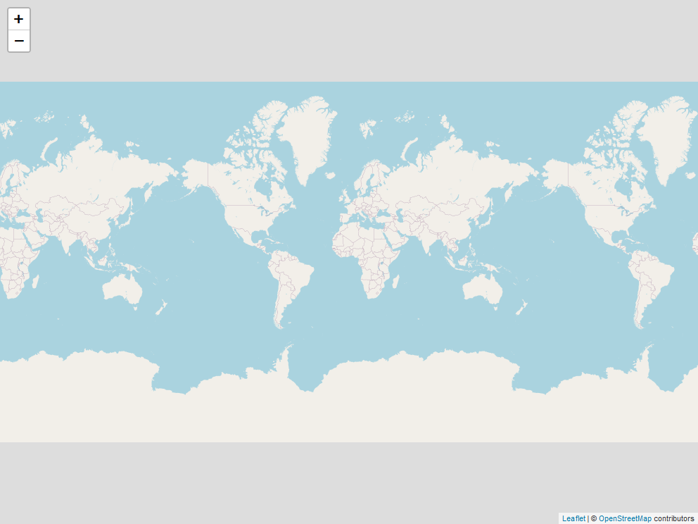
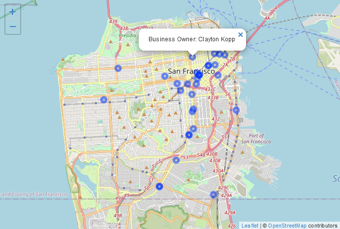
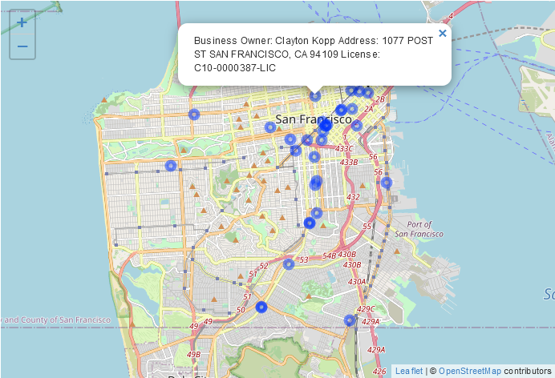
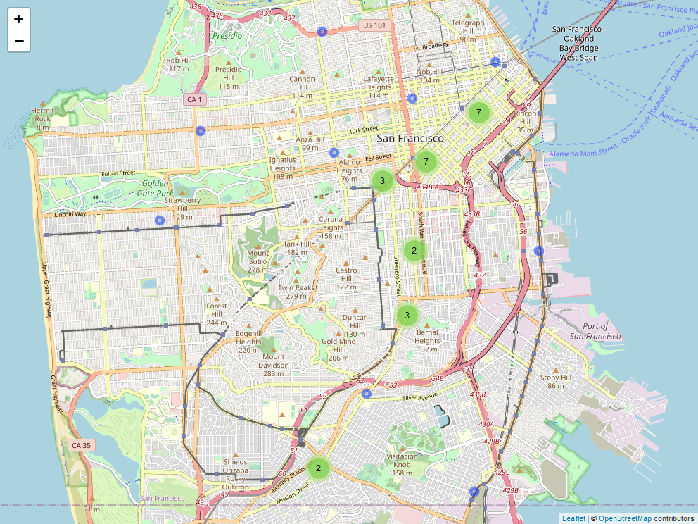
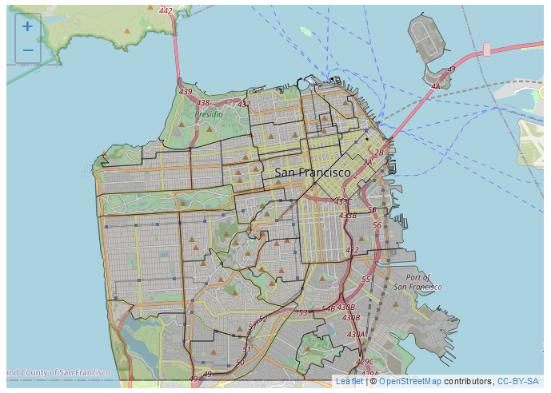
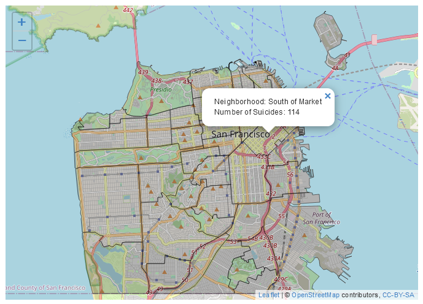
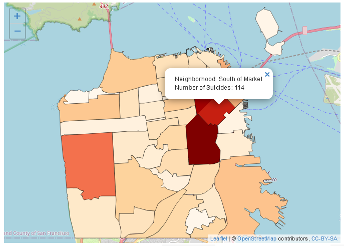
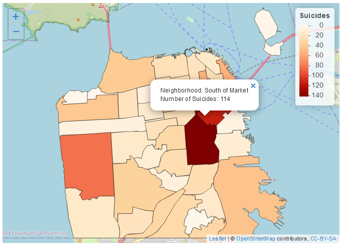

18 Interactive maps
For this chapter you’ll need the following files, which are available for download here: san_francisco_marijuana_geocoded.csv and sf_neighborhoods_suicide.rda.
While maps of data are useful, their ability to show incident-level information is quite limited. They tend to show broad trends - where crime happened in a city - rather than provide information about specific crime incidents. While broad trends are important, there are significant drawbacks about being unable to get important information about an incident without having to check the data. An interactive map bridges this gap by showing trends while allowing you to zoom into individual incidents and see information about each incident.
For this lesson we will be using data on every marijuana dispensary in San Francisco that has an active dispensary license as of late September 2019. The file is called “san_francisco_marijuana_geocoded.csv”.
When downloaded from California’s Bureau of Cannabis Control (here if you’re interested) the data contains the address of each dispensary but does not have coordinates. Without coordinates we are unable to map points, meaning we need to geocode them. Geocoding is the process of taking an address and getting the longitude and latitude of that address for mapping. For this lesson I’ve already geocoded the data, and we’ll learn how to do so in Chapter 24.
library(readr)
marijuana <- read_csv("data/san_francisco_marijuana_geocoded.csv")
marijuana <- as.data.frame(marijuana)18.1 Why do interactive graphs matter?
18.1.1 Understanding your data
The most important thing to learn from this book is that understanding your data is crucial to good research. Making interactive maps is a very useful way to better understand your data as you can immediately see geographic patterns and quickly look at characteristics of those incidents to understand them.
In this lesson we will make a map of each marijuana dispensary in San Francisco that lets you click on the dispensary and see some information about it. If we see a cluster of dispensaries, we can click on each one to see if they are similar - for example, if owned by the same person. Though it is possible to find these patterns just looking at the data, it is easier to be able to see a geographic pattern and immediately look at information about each incident.
18.1.2 Police departments use them
Interactive maps are popular in large police departments, such as Philadelphia and New York City. They allow easy understanding of geographic patterns in the data and, importantly, allow such access to people who do not have the technical skills necessary to interact with the data itself. If nothing else, learning interactive maps may help you with a future job.
18.2 Making the interactive map
As usual, let’s take a look at the top 6 rows of the data.
head(marijuana)
# License_Number License_Type Business_Owner
# 1 C10-0000614-LIC Cannabis - Retailer License Terry Muller
# 2 C10-0000586-LIC Cannabis - Retailer License Jeremy Goodin
# 3 C10-0000587-LIC Cannabis - Retailer License Justin Jarin
# 4 C10-0000539-LIC Cannabis - Retailer License Ondyn Herschelle
# 5 C10-0000522-LIC Cannabis - Retailer License Ryan Hudson
# 6 C10-0000523-LIC Cannabis - Retailer License Ryan Hudson
# Business_Structure Premise_Address Status
# 1 Limited Liability Company 2165 IRVING ST san francisco, CA 94122 Active
# 2 Corporation 122 10TH ST SAN FRANCISCO, CA 941032605 Active
# 3 Corporation 843 Howard ST SAN FRANCISCO, CA 94103 Active
# 4 Corporation 70 SECOND ST SAN FRANCISCO, CA 94105 Active
# 5 Limited Liability Company 527 Howard ST San Francisco, CA 94105 Active
# 6 Limited Liability Company 2414 Lombard ST San Francisco, CA 94123 Active
# Issue_Date Expiration_Date Activities Adult-Use/Medicinal
# 1 9/13/2019 9/12/2020 N/A for this license type BOTH
# 2 8/26/2019 8/25/2020 N/A for this license type BOTH
# 3 8/26/2019 8/25/2020 N/A for this license type BOTH
# 4 8/5/2019 8/4/2020 N/A for this license type BOTH
# 5 7/29/2019 7/28/2020 N/A for this license type BOTH
# 6 7/29/2019 7/28/2020 N/A for this license type BOTH
# lat long
# 1 37.76318 -122.4811
# 2 37.77480 -122.4157
# 3 37.78228 -122.4035
# 4 37.78823 -122.4004
# 5 37.78783 -122.3965
# 6 37.79944 -122.4414This data has information about the type of license, who the owner is, and where the dispensary is (as an address and as coordinates). We’ll be making a map showing every dispensary in the city and make it so when you click a dot it’ll make a popup showing information about that dispensary.
We will use the package leaflet for our interactive map. leaflet produces maps similar to Google Maps with circles (or any icon we choose) for each value we add to the map. It allows you to zoom in, scroll around, and provides context to each incident that isn’t available on a static map.
install.packages("leaflet")library(leaflet)To make a leaflet map we need to run the function leaflet() and add a tile to the map. We can just use the default tile which doesn’t need an input. If you’re interested in other tiles, please see this website.
We will use a standard tile from Open Street Maps. This tile gives street names and highlights important features such as parks and large stores which provides useful contexts for looking at the data.
leaflet() %>%
addTiles()
When you run the above code it shows a world map (copied several times). Zoom into it, and it’ll start showing relevant features of wherever you’re looking.
Note the %>% between the leaflet() function and the addTiles() function. leaflet is one of the packages in R where we can use pipes.
To add the points to the graph we use the function addMarkers(), which has two parameters, lng and lat. For both parameters we put the column in which the longitude and latitude are, respectively.
leaflet() %>%
addTiles() %>%
addMarkers(lng = marijuana$long,
lat = marijuana$lat)
It now adds an icon indicating where every dispensary in our data is. You can zoom in and scroll around to see more about where the dispensaries are. There are only a few dozen locations in the data so the popups overlapping a bit doesn’t affect our map too much. If we had more - such as crime data with millions of offenses - it would make it very hard to read. To change the icons to circles we can change the function addMarkers() to addCircleMarkers(), keeping the rest of the code the same.
leaflet() %>%
addTiles() %>%
addCircleMarkers(lng = marijuana$long,
lat = marijuana$lat)
This makes the icon into circles, which take up less space than icons. To adjust the size of our icons we use the radius parameter in addMarkers() or addCircleMarkers(). The larger the radius, the larger the icons.
leaflet() %>%
addTiles() %>%
addCircleMarkers(lng = marijuana$long,
lat = marijuana$lat,
radius = 5)
Setting the radius option to 5 shrinks the size of the icon a lot. In your own maps you’ll have to fiddle with this option to get it to look the way you want. Let’s move on to adding information about each icon when clicked upon.
18.3 Adding popup information
The parameter popup in the addMarkers() or addCircleMarkers() functions lets you input a character value (if not already a character value it will convert it to one) and that will be shown as a popup when you click on the icon. Let’s start simple here by inputting the business owner column in our data and then build it up to a more complicated popup.
leaflet() %>%
addTiles() %>%
addCircleMarkers(lng = marijuana$long,
lat = marijuana$lat,
radius = 5,
popup = marijuana$Business_Owner)
Try clicking around and you’ll see that the owner of the dispensary you clicked on appears over the dot. If you’re reading the print version of this book you won’t, of course, be able to click on the map. We usually want to have a title indicating what the value in the popup means. We can do this by using the paste() function to combine text explaining the value with the value itself. Let’s add the words “Business Owner:” before the business owner column.
leaflet() %>%
addTiles() %>%
addCircleMarkers(lng = marijuana$long,
lat = marijuana$lat,
radius = 5,
popup = paste("Business Owner:",
marijuana$Business_Owner))
We don’t have too much information in the data, but let’s add the address and license number to the popup by adding them to the paste() function we’re using.
leaflet() %>%
addTiles() %>%
addCircleMarkers(lng = marijuana$long,
lat = marijuana$lat,
radius = 5,
popup = paste("Business Owner:",
marijuana$Business_Owner,
"Address:",
marijuana$Premise_Address,
"License:",
marijuana$License_Number))
Just adding the location text makes it try to print out everything on one line, which is hard to read. If we add the text <br> where we want a line break, it will make one. <br> is the HTML tag for line-break, which is why it works making a new line in this case.
leaflet() %>%
addTiles() %>%
addCircleMarkers(lng = marijuana$long,
lat = marijuana$lat,
radius = 5,
popup = paste("Business Owner:",
marijuana$Business_Owner,
"<br>",
"Address:",
marijuana$Premise_Address,
"<br>",
"License:",
marijuana$License_Number))
18.4 Dealing with too many markers
In our case with only 33 rows of data, turning the markers to circles solves our visibility issue. In cases with many more rows of data, this doesn’t always work. A solution for this is to cluster the data into groups where the dots only show if you zoom in.
If we add the code clusterOptions = markerClusterOptions() to our addCircleMarkers() it will cluster for us.
leaflet() %>%
addTiles() %>%
addCircleMarkers(lng = marijuana$long,
lat = marijuana$lat,
radius = 5,
popup = paste("Business Owner:",
marijuana$Business_Owner,
"<br>",
"Address:",
marijuana$Premise_Address,
"<br>",
"License:",
marijuana$License_Number),
clusterOptions = markerClusterOptions())
Locations close to each other are grouped together in fairly arbitrary groupings, and we can see how large each grouping is by moving our cursor over the circle. Click on a circle or zoom in and it will show smaller groupings at lower levels of aggregation. Keep clicking or zooming in, and it will eventually show each location as its own circle.
This method is very useful for dealing with huge amounts of data as it avoids overflowing the map with too many icons at one time. A downside, however, is that the clusters are created arbitrarily meaning that important context, such as neighborhood, can be lost.
18.5 Interactive choropleth maps
In Chapter 17 we worked on choropleth maps which are maps with shaded regions, such as states colored by which political party won them in an election. Here we will make interactive choropleth maps where you can click on a shaded region and see information about that region. We’ll make the same map as before - neighborhoods shaded by the number of suicides.
Let’s load the San Francisco suicides-by-neighborhood data that we made earlier. We’ll also want to project it to the standard longitude and latitude projection, otherwise our map won’t work right.
library(sf)
# Warning: package 'sf' was built under R version 4.2.2
# Linking to GEOS 3.9.3, GDAL 3.5.2, PROJ 8.2.1; sf_use_s2() is TRUE
load("data/sf_neighborhoods_suicide.rda")
sf_neighborhoods_suicide <- st_transform(sf_neighborhoods_suicide,
"+proj=longlat +datum=WGS84")We’ll begin the leaflet map similar to before but use the function addPolygons(), and our input here is the geometry column of sf_neighborhoods_suicide.
leaflet() %>%
addTiles() %>%
addPolygons(data = sf_neighborhoods_suicide$geometry)
It made a map with thick blue lines indicating each neighborhood. Let’s change the appearance of the graph a bit before making a popup or shading the neighborhoods The parameter color in addPolygons() changes the color of the lines - let’s change it to black. The lines are also very thick, blurring into each other and making the neighborhoods hard to see. We can change the weight parameter to alter the size of these lines - smaller values are thinner lines. Let’s try setting this to 1.
leaflet() %>%
addTiles() %>%
addPolygons(data = sf_neighborhoods_suicide$geometry,
color = "black",
weight = 1)
That looks better and we can clearly distinguish each neighborhood now.
As we did earlier, we can add the popup text directly to the function which makes the geographic shapes, in this case addPolygons(). Let’s add the nhood column value - the name of that neighborhood - and the number of suicides that occurred in that neighborhood. As before, when we click on a neighborhood a popup appears with the output we specified.
leaflet() %>%
addTiles() %>%
addPolygons(data = sf_neighborhoods_suicide$geometry,
col = "black",
weight = 1,
popup = paste0("Neighborhood: ",
sf_neighborhoods_suicide$nhood,
"<br>",
"Number of Suicides: ",
sf_neighborhoods_suicide$number_suicides))
For these types of maps we generally want to shade each polygon to indicate how frequently the event occurred in the polygon. We’ll use the function colorNumeric(), which takes a lot of the work out of the process of coloring in the map. This function takes two inputs, first a color palette, which we can get from the site Color Brewer. Let’s use the fourth bar in the Sequential page, which is light orange to red. If you look in the section with each HEX value it says that the palette is “3-class OrRd.” The “3-class” just means we selected 3 colors, the “OrRd” is the part we want. That will tell colorNumeric() to make the palette using these colors. The second parameter is the column for our numeric variable, number_suicides.
We will save the output of colorNumeric("OrRd", sf_neighborhoods_suicide$number_suicides) as a new object, which we’ll call pal for convenience since it is a palette of colors. Then inside of addPolygons() we’ll set the parameter fillColor to pal(sf_neighborhoods_suicide$number_suicides), running this function on the column. What this really does is determine which color every neighborhood should be based on the value in the number_suicides column.
pal <- colorNumeric("OrRd", sf_neighborhoods_suicide$number_suicides)
leaflet() %>%
addTiles() %>%
addPolygons(data = sf_neighborhoods_suicide$geometry,
col = "black",
weight = 1,
popup = paste0("Neighborhood: ",
sf_neighborhoods_suicide$nhood,
"<br>",
"Number of Suicides: ",
sf_neighborhoods_suicide$number_suicides),
fillColor = pal(sf_neighborhoods_suicide$number_suicides))
Since the neighborhoods are transparent, it is hard to distinguish which color is shown. We can make each neighborhood a solid color by setting the parameter fillOpacity inside of addPolygons() to 1.
leaflet() %>%
addTiles() %>%
addPolygons(data = sf_neighborhoods_suicide$geometry,
col = "black",
weight = 1,
popup = paste0("Neighborhood: ",
sf_neighborhoods_suicide$nhood,
"<br>",
"Number of Suicides: ",
sf_neighborhoods_suicide$number_suicides),
fillColor = pal(sf_neighborhoods_suicide$number_suicides),
fillOpacity = 1)
To add a legend to this we use the function addLegend(), which takes three parameters. pal asks which color palette we are using - we want it to be the exact same as we use to color the neighborhoods, so we’ll use the pal object we made. The values parameter is used for which column our numeric values are from, in our case the number_suicides column so we’ll input that. Finally opacity determines how transparent the legend will be. As each neighborhood is set to not be transparent at all, we’ll also set this to 1 to be consistent.
leaflet() %>%
addTiles() %>%
addPolygons(data = sf_neighborhoods_suicide$geometry,
col = "black",
weight = 1,
popup = paste0("Neighborhood: ",
sf_neighborhoods_suicide$nhood,
"<br>",
"Number of Suicides: ",
sf_neighborhoods_suicide$number_suicides),
fillColor = pal(sf_neighborhoods_suicide$number_suicides),
fillOpacity = 1) %>%
addLegend(pal = pal,
values = sf_neighborhoods_suicide$number_suicides,
opacity = 1)
Finally, we can add a title to the legend using the title parameter inside of addLegend().
leaflet() %>%
addTiles() %>%
addPolygons(data = sf_neighborhoods_suicide$geometry,
col = "black",
weight = 1,
popup = paste0("Neighborhood: ",
sf_neighborhoods_suicide$nhood,
"<br>",
"Number of Suicides: ",
sf_neighborhoods_suicide$number_suicides),
fillColor = pal(sf_neighborhoods_suicide$number_suicides),
fillOpacity = 1) %>%
addLegend(pal = pal,
values = sf_neighborhoods_suicide$number_suicides,
opacity = 1,
title = "Suicides") %>%
addProviderTiles(providers$CartoDB.Positron) 